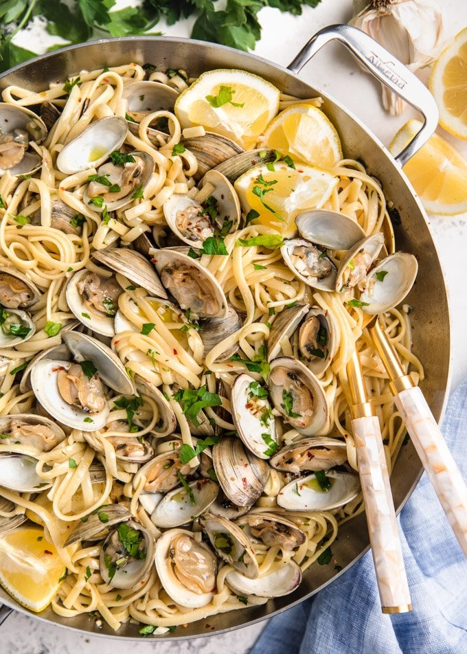

Clams Linguine

Description
This is one of my pasta dishes and goes great with a seafood delight.
Ingredients
- 1 (16 ounce) package linguine pasta
- 8 tablespoons unsalted butter
- 1 medium white onion, chopped
- 8 ounces fresh mushrooms, sliced
- 4 cloves garlic, pressed
- 1 cup dry white wine
- 4 (6.5 ounce) cans chopped clams, drained and rinsed with juices reserved
- 2 tablespoons sour cream
- freshly ground black pepper
- ¼ cup chopped flat leaf parsley
Steps
- Bring a large pot of lightly salted water to a boil. Add pasta and cook for 8 to 10 minutes, or until al dente. Drain and set aside.
- Melt butter over medium-high heat in a large skillet. Add onions, mushrooms, and garlic, and saute until tender. Pour in wine and simmer for 10 minutes, reducing heat if necessary.
- Stir in clams, reserved clam juice, sour cream, pepper, and parsley, and simmer another 20 minutes. Toss with linguine, and serve. Enjoy!